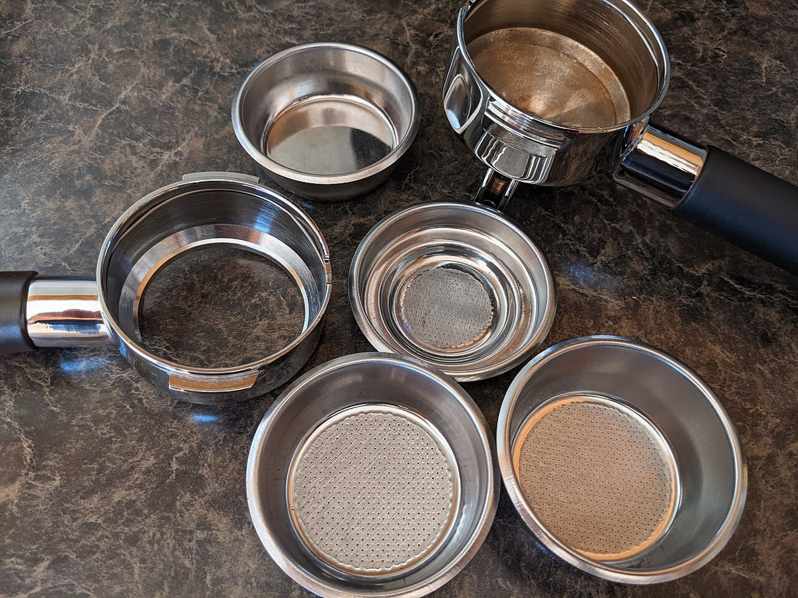

店のこと
店のこと
お店について確認できているのは、所在地・電話番号・Instagramのアカウントです。
「連想してみる」の部分は、制作側が考えたものです。お店の実際の様子・考え・メニューとは関係がありません。
確認できていること
- 店名は「COLORS coffee house」、業種はカフェ
- 所在地は広島県三原市宮浦６丁目１１−５(〒723-0051)
- 電話番号は0848-29-2007
- Instagramは @colors_coffee_house
- 営業時間・定休日・メニュー・価格・ご予約・駐車場は準備中

連想してみる
円盤を回して、白になるまで
制作側は店名から、色を塗り分けた円盤を連想しました。このサイトでは、写真を色の近さで棚に分けています。お店の実際の姿ではありません。
銀

